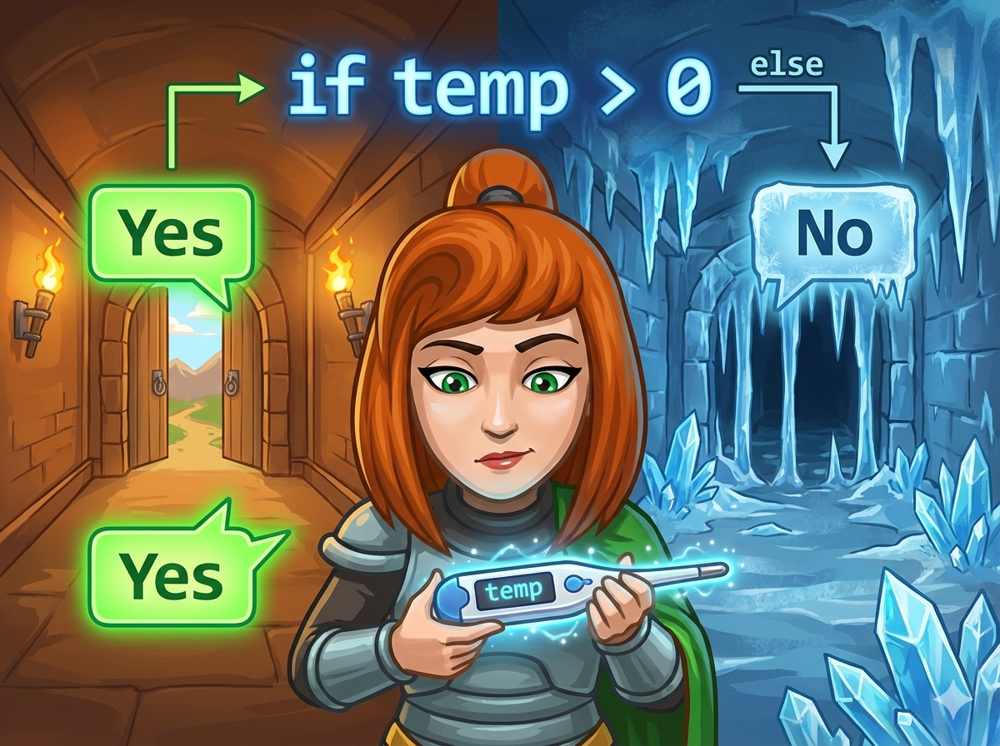

英雄安雅正在探索一个神秘冰冷的地牢。 他手里拿着一个 智能温度计 🌡️，这是他保命的关键！
每走一步，安雅都要看一眼温度计：
🌞 如果温度是 正数 (大于0)，说明环境安全，可以 "Yes" (继续前行)。
❄️ 如果温度 不是正数 (小于或等于0)，说明太冷了，必须 "No" (停止前进)。
👉 任务： 编写程序，读入一个整数（温度），帮安雅判断是该输出 Yes 还是 No。
这道题我们要学习编程中最聪明的魔法："分岔路口" (if-else)。
安雅正在等待温度计的指令，快写代码帮他判断吧！
#include <iostream> using namespace std; int main() { // 1️⃣ 声明变量 n (表示温度) int n; // 2️⃣ 输入温度 cin >> n; // 3️⃣ 开始判断！ if (n > 0) { // 🌞 如果 n 大于 0，说明很暖和 cout << "Yes" << endl; } else { // ❄️ 否则 (n 是 0 或者负数)，太冷了 cout << "No" << endl; } return 0; }
# 1️⃣ 输入：读取温度并转为整数，存入 n n = int(input()) # 2️⃣ 开始判断！ if n > 0 : # 🌞 如果 n 大于 0，打印 Yes # 注意：前面有缩进哦！ print("Yes") else : # ❄️ 否则 (0 或负数)，打印 No # 注意：else 后面有冒号，下面也要缩进 print("No")
⭐ 易错点： 正数是 大于 0 的数。0 既不是正数也不是负数，所以 0 应该走 else (No) 这条路哦！